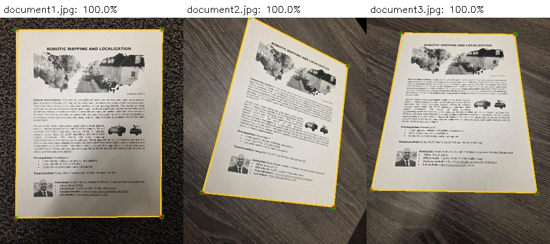

Homework 08: Document Boundary Detection
Due: Wednesday, October 28, 2026
Total: 5 points
Submission: Gradescope Programming Assignment
Work: Individual
Objective
Locate the four corners of a document in a photograph. We will develop a script to use these corners and straighten/scan the page later. In this homework, you will detect the boundaries and corners; you do not need to rectify or scan the document.
Use the course cv Conda environment. You may adapt the lecture examples. Do not use generative AI to solve this homework.
Starter files
Download HW08_Starter.zip and extract it into one folder. It contains:
| File | Purpose |
|---|---|
| hw08.py | Complete detect_document; the line-intersection helper is provided |
| evaluate.py | Run the public examples, display scores, and save overlays |
| hw08_support.py | Provided scoring and required-method checks |
| public_corners.json | Reference corners for the three public images |
| document1.jpg, document2.jpg, document3.jpg | Images for development and tuning |


Keep the images and provided evaluation files unchanged. Submit only hw08.py.
Images and assumptions
All public and hidden images are 750 pixels wide and 1000 pixels high. Each contains one large, light document on a darker background. The document covers the image center, and all four corners are visible. Rotation, perspective, background texture, shadows, and contrast can vary within the range illustrated by the public examples.
There are three public tuning images and three hidden grading images. Hidden images follow these same assumptions. Use one shared algorithm and parameter policy across all images. You may adapt processing to image measurements using the same rules on every image, but do not identify images by filename, pixel signatures, or stored reference answers. Do not use per-image parameter tables or load the reference annotations inside your detector.
Implement the detector
Complete this function in hw08.py:
def detect_document(image):
...Input: a BGR uint8 NumPy array with shape (1000, 750, 3), as loaded by cv2.imread.
Output: a numeric NumPy array with shape (4, 2). Each row is a document corner (x, y) in the original image coordinates: x is the column and y is the row. Floating-point coordinates are welcome. Corner order does not matter. If detection fails, return np.empty((0, 2)).
Your pipeline must:
- Preprocess the image and compute an edge image.
- Call
cv2.HoughLinesto generate candidate boundary lines. - Select four distinct document boundaries from the candidates.
- Call the provided
intersect_lineshelper to compute the four returned corners from appropriate pairs of selected lines.
Both cv2.HoughLines and the provided helper are mandatory. Their outputs must actually be used to obtain your answer; unused calls do not satisfy the requirement. A case that does not meet the required-method checks earns no localization credit. The grader checks calls, and submissions may also be reviewed for compliance.
You may add helper functions to hw08.py. Use cv2, numpy, and standard-library modules. Standard preprocessing, edge detection, candidate filtering, and geometric reasoning are allowed. Do not use cv2.HoughLinesP, contour-based quadrilateral detection, another corner/line detector, or a learned model to replace the required pipeline.
Do not modify the input image. Keep the supplied intersect_lines function unchanged, and call it by that name within your detector or your own helpers. Keep computation inside functions so importing hw08.py does not run experiments or read files.
Provided line-intersection helper
A Hough line has the form
\[ x\cos\theta+y\sin\theta=r. \]
The helper accepts two (r, theta) pairs and returns their intersection as a floating-point (x, y) array. It returns None when the lines are parallel or nearly parallel.
corner = intersect_lines(line1, line2)Choose pairs that represent adjacent document boundaries. You do not need to implement the linear algebra used by this helper.
Hints
- View the edge image first. If text and background texture create too much clutter, increase Gaussian smoothing or the Canny thresholds. If document boundaries disappear, reduce them.
- Start with the higher Canny threshold about two to three times the lower one, then adjust based on the results.
- In
cv2.HoughLines, raisethresholdto reject weak candidates; lower it if a visible document edge is not detected. - Start with
rho=1andtheta=np.pi/180. Try a smaller angular step if the detected lines do not align closely with the boundaries. - The first four returned lines may not be the document boundaries. To rank candidates, sample brightness on both sides at several locations along each line. Favor a consistent change from lighter pixels toward the image center to darker pixels away from it, since the document contains the center.
- Group candidates whose visible segments nearly overlap, keeping one representative per group. Then select four distinct boundaries surrounding the image center. Similar orientation alone does not make two lines duplicates.
- Change one parameter at a time and check all three public images.
- If you resize the image, convert the returned corners back to the original coordinates.
Run and inspect
From the folder containing the extracted starter files:
conda activate cv
python evaluate.pyThe evaluator prints the public score and corner-distance bands. It saves individual overlays, public_overview.jpg, and public_results.json in results/. Green circles indicate reference corners; red crosses and yellow lines indicate your predictions. The untouched starter receives zero until you implement the detector.
You can choose another output folder:
python evaluate.py --output-dir trial_2The evaluator reports exception types without interrupting the remaining cases. To obtain a full Python traceback while debugging, call your function directly:
import cv2
from hw08 import detect_document
image = cv2.imread("document1.jpg")
corners = detect_document(image)
print(corners)
You do not need to reproduce exact line parameters, edge maps, plotting details, or reference-solution corner coordinates. Your predicted corners are graded by their distances to the annotations.
Tests and grading
| Test group | Images | Points |
|---|---|---|
| Public document images | 3 | 1 |
| Hidden document images | 3 | 4 |
| Total | 6 | 5 |
Images have equal weight within their group. The grader finds the one-to-one correspondence between your four corners and the reference corners that maximizes total credit. One prediction cannot be matched to multiple reference corners.
| Euclidean distance to the matched reference corner | Corner credit |
|---|---|
| At most 8 pixels | 100% |
| More than 8, at most 16 pixels | 75% |
| More than 16, at most 32 pixels | 50% |
| More than 32, at most 48 pixels | 25% |
| More than 48 pixels | 0% |
Each image’s accuracy is the average credit across its four corners. Your homework score is
\[ \text{score}=1\times\text{mean public accuracy} +4\times\text{mean hidden accuracy}, \]
where accuracies are between 0 and 1. For example, corner distances of 5, 12, 25, and 60 pixels earn credits of 1, 0.75, 0.5, and 0, giving 56.25% accuracy for that image.
Return exactly four corners, or the specified empty array. Returning extra candidates is not accepted. An empty result earns zero for that image. Malformed results, nonfinite coordinates, exceptions, timeouts, and required-method violations receive clear feedback and zero for the affected case. Other images are still evaluated. No extra synthetic or unrelated image cases are graded.
After each submission, all six case scores and corner-band counts are visible immediately, including the hidden cases. Hidden images, overlays, exact errors, and reference coordinates are not shown. Hidden cases use anonymous labels.
Submission
Submit only your completed hw08.py to Gradescope. No report, generated images, notebook, helper module, or reference JSON is required.
You have five submissions. Submissions 6 and later receive zero for that submission; earlier submissions remain unchanged. Platform autograder failures are excluded from the count, while student-code errors and timeouts count.
The due date is Wednesday, October 28, 2026; use the time displayed in Gradescope. The course late policy permits submission for one additional week with a 20% penalty. After that week, the homework receives zero. The autograder displays the raw score before any late penalty.